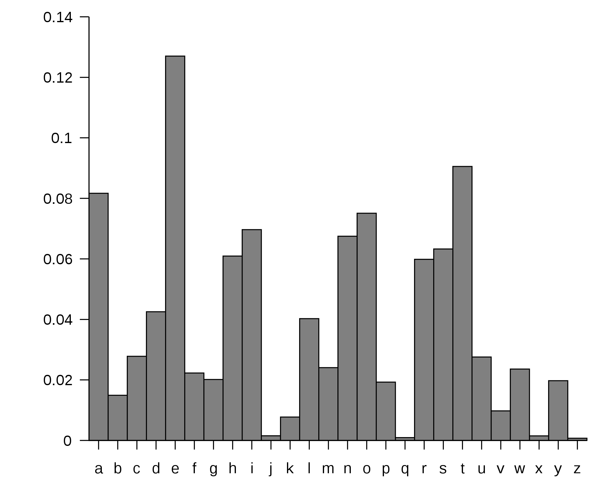
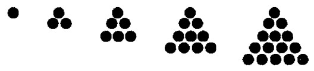
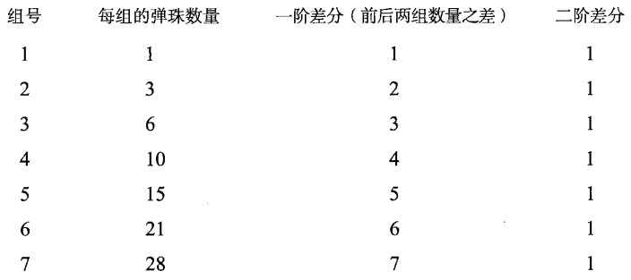
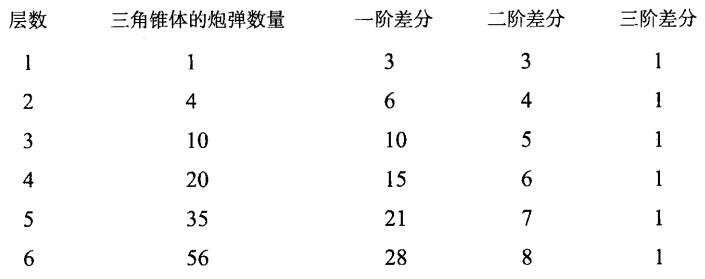
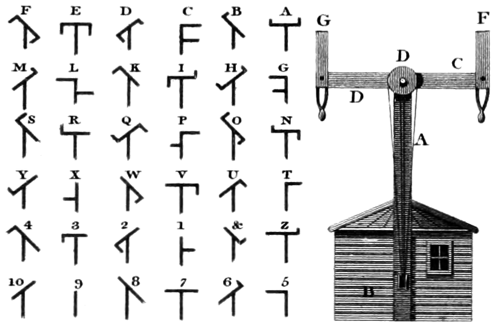
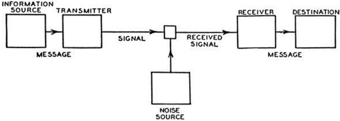

The Information: A History, A Theory, A Flood
1 目录
2 引子
通信的基本问题是，在一点精确地或近似地复现在另一点所选取的讯息。这些讯息往往都带有意义。 —— 克劳德·香农，《通信的数学理论》
The fundamental problem of communication is that of reproducing at one point either exactly or approximately a message selected at another point. Frequently the messages have meaning. — Claude Shannon
1948 年，贝尔电话实验室发明的晶体管引发了电子产业的革命，为电子技术的微型化和普遍应用开辟了道路，而它的三位主要发明人也很快获得了诺贝尔奖。《通信的数学理论》是个支点，整个地球都将因此而被撬动。和晶体管一样，这项研究也引入了一个新词：比特，用于测量信息的单位。
1948 was when the Bell Telephone Laboratories … the transistor sparked the revolution in electronics, setting the technology on its path of miniaturization and ubiquity, and soon won the Nobel Prize for its three chief inventors. "A Mathematical Theory of Communication" was a fulcrum around which the world began to turn. Like the transistor, this development also involved a neologism: the word bit, a unit for measuring information.
在 22 岁那年，香农在硕士论文中把一个 19 世纪的思想，即乔治·布尔的逻辑代数，应用到了电子电路的设计上。
At twenty-two he wrote a dissertation that applied a nineteenth-century idea, George Boole's algebra of logic, to the design of electrical circuits.
回首三个世纪前，当时物理学的发展已经到了难以突破的地步，但随着艾萨克·牛顿将一些古老但意义模糊的词（力、质量、运动，甚至时间）赋予新的含义，物理学的新时代开始了。牛顿把这些术语加以量化，以便能够放在数学方程中使用。……到了 19 世纪，energy（能）一词也开始经历相似的转变过程：自然哲学家选取这个原本用来表示生动有力或强度的词，使之数学化，从而赋予了它在物理学家自然观中的基础地位。
Three centuries earlier, the new discipline of physics could not proceed until Isaac Newton appropriated words that were ancient and vague — force, mass, motion, and even time — and gave them new meanings. Newton made these terms into quantities, suitable for use in mathematical formulas. … In the nineteenth century, energy began to undergo a similar transformation: natural philosophers adapted a word meaning vigor or intensity. They mathematicized it, giving energy its fundamental place in the physicists' view of nature.
信息这个词……加以简化、精练，并以比特度量后，人们发现信息几乎无处不在。香农的理论在信息与不确定性、信息与熵，以及信息与混沌之间架起了桥梁。它的出现最终引发了光盘和传真机、电脑和网络、摩尔定律以及世界各地的「硅巷」。信息处理、信息存储以及信息检索等也应运而生。人们开始将铁器时代和蒸汽时代之后的时代称为信息时代。
Information … when it was made simple, distilled, counted in bits, information was found to be everywhere. Shannon's theory made a bridge between information and uncertainty; between information and entropy; and between information and chaos. It led to compact discs and fax machines, computers and cyberspace, Moore's law and all the world's Silicon Alleys. Information processing was born, along with information storage and information retrieval. People began to name a successor to the Iron Age and the Steam Age.
DNA 是信息分子的典型代表，是细胞层次上最先进的讯息处理器——它是一份字母表、一种编码，用 60 亿比特的信息定义了一个人。……「处于所有生物核心的不是火，不是热气，也不是所谓的「生命火花」，而是信息、字词以及指令……如果你想了解生命，就别去研究那些生机勃勃、动来动去的原生质了，从信息技术的角度想想吧。」生物体中的所有细胞都是一个错综复杂的通信网络中的节点，它们一刻不停地传输和接受信息，不停地编码和解码。进化本身正是生物体与环境之间持续不断的信息交换的具体表现。
DNA is the quintessential information molecule, the most advanced message processor at the cellular level — an alphabet and a code, 6 billion bits to form a human being. "What lies at the heart of every living thing is not a fire, not warm breath, not a "spark of life". It is information, words, instructions.… If you want to understand life, don't think about vibrant, throbbing gels and oozes, think about information technology." The cells of an organism are nodes in a richly interwoven communications network, transmitting and receiving, coding and decoding. Evolution itself embodies an ongoing exchange of information between organism and environment.
基因在文化上的对应物是模因。在文化的演化过程中，模因扮演着复制者和传播者的角色——它可能是一股思潮、一阵时尚、一封「连锁信」，又或是一种阴谋论。
The gene has its cultural analog, too: the meme. In cultural evolution, a meme is a replicator and propagator — an idea, a fashion, a chain letter, or a conspiracy theory.
即便是在货币看上去是一种物质财富，……它也是一种信息。无论是硬币、纸币，还是金币、贝壳，它们都只不过是阶段性的技术，用以表明谁拥有什么的信息。
Even when money seemed to be material treasure, … it always was information. Coins and notes, shekels and cowries were all just short-lived technologies for tokenizing information about who owns what.
「万物源自比特」。……「我们所谓的实在，是在对一系列「是」或「否」的追问综合分析后才在我们脑中成形的。所有实体之物，在起源上都是信息理论意义上的，而这个宇宙是个观察者参与其中的宇宙。」因此，整个宇宙可以看作一台计算机——一台巨大的信息处理机器。……当光子、电子以及其他基本粒子发生相互作用时，它们实际是在做什么呢？其实是在交换比特、转换量子态以及处理信息，而物理定律就是处理信息时所用的算法。因此，每一颗正在燃烧的恒星、每一个星云、每一粒在云室中留下幽灵般痕迹的粒子，都是一台信息处理器，而宇宙也在计算着自己的命运。……宇宙的运算能力「不会超过在 10^90 个比特上执行 10^120 次基本逻辑运算」。
"It from Bit." … "What we call reality, arises in the last analysis from the posing of yes-no questions. All things physical are information-theoretic in origin, and this is a participatory universe." The whole universe is thus seen as a computer — a cosmic information-processing machine. … When photons and electrons and other particles interact, what are they really doing? Exchanging bits, transmitting quantum states, processing information. The laws of physics are the algorithms. Every burning star, every silent nebula, every particle leaving its ghostly trace in a cloud chamber is an information processor. The universe computes its own destiny. … "No more than 10^120 ops on 10^90 bits."
普罗米修斯赠予人类的最宝贵的礼物，到底还不是火种：「……数，……所有科学中最最重要的，还有排列字母的技术，……借此可以把一切都牢牢记住。」字母表是诸信息技术中的奠基性技术。而电话机、传真机、机械计算器，以及最终的电脑，它们只是用以存储、操作和传递知识的种种工具中的晚近发明。
The greatest gift of Prometheus to humanity was not fire after all: "Numbers, … chiefest of sciences, and the combining of letters, … with which to hold all things in memory." The alphabet was a founding technology of information. The telephone, the fax machine, the calculator, and, ultimately, the computer are only the latest innovations devised for saving, manipulating, and communicating knowledge.
每一种新出现的信息技术，都在当时催生了信息存储和传输的新需求。随着印刷术的发明，出现了新的信息组织工具，如汇编词汇的字典、梳理知识的百科全书，以及整理事实的年鉴等。……「印刷术的发明，固然是天才之举，然而较之于字母的发明，并没什么大不了。」……每一种新出现的媒介，都会对人类思维的性质加以改造。长远来看，所谓历史，就是信息逐步从自发到自觉的一个过程。
Each new information technology, in its own time, set off blooms in storage and transmission. From the printing press came new species of information organizers: dictionaries, cyclopaedias, almanacs — compendiums of words, classifiers of facts, trees of knowledge. … "The invention of printing, though ingenious, compared with the invention of letters is no great matter." … Every new medium transforms the nature of human thought. In the long run, history is the story of information becoming aware of itself.
3 第一章
讯息的意义必须预先约定，并精简到一个比特。换句话说，必须是个非此即彼的二元选择，有事或无事：火光燃起，表示有事；这一次，它表示「特洛伊城已被攻陷」。传递这一个比特信息，需要用到周密的计划、高度的警觉，以及大量的人力和薪柴。很多很多年后，在美国独立战争爆发前夜，波士顿旧北区教堂的灯笼也同样给保罗·里维尔传递了一个珍贵的比特：一盏灯代表英国人走陆路，两盏灯代表英国人走海路。
The meaning of the message had, of course, to be prearranged, effectively condensed into a single bit. A binary choice, something or nothing: the fire signal meant something, which, just this once, meant "Troy has fallen." To transmit this one bit required immense planning, labor, watchfulness, and firewood. Many years later, lanterns in Old North Church likewise sent Paul Revere a single precious bit, which he carried onward, one binary choice: by land or by sea.
……他们考虑了一种基于两个元素的系统：一个是点击（现在称为点），另一个是点击之间的停顿。后来，他们……萌发了加入第三个元素的想法：线或划，以「电路闭合的时间比发送一个点更长」来表示。这种编码后来被称为点–划字母表，但没有提及的停顿也同等重要，因此，摩尔斯电码并不是一种二进制语言。
… they conceived of a system built on two elements: the clicks (now called dots) and the spaces in between. Then, … they came up with a third sign: the line or dash, "when the circuit was closed a longer time than was necessary to make a dot." The code became known as the dot-and-dash alphabet, but the unmentioned space remained just as important; Morse code was not a binary language.
……为了提高速度，他们可以设计让最常用的字母对应较短的编码，以减少击键的次数。但哪些字母才是最常用的呢？在当时，人们对于字母的使用频率还未作过统计。……拜访了……一家当地报社。……仔细查看了他们使用的铅字盘，发现备货中有一万两千个 E、九千个 T，但只有两百个 Z。他和摩尔斯据此调整了字母编码。
In the name of speed, … they could save strokes by reserving the shorter sequences of dots and dashes for the most common letters. But which letters would be used most often? Little was known about the alphabet's statistics. … visit the local newspaper office … and look over the type cases. He found a stock of twelve thousand E's, nine thousand T's, and only two hundred Z's. He and Morse rearranged the alphabet accordingly.

摩尔斯的系统建立在一个中间符号层，也就是字母表的基础上。字母表将口语和他最终的编码联系了起来。摩尔斯的点–划编码，与口语语音并无直接联系。点–划编码仅仅用来表示字母，字母再组成书面单词，最终书面单词才表示口语中的单词。非洲的鼓手们就没有这么一种中间编码可用，无法通过一个中间符号层来完成这样的抽象，毕竟就像目前世界上现存六千多种语言中的大部分，非洲的各种语言没有字母表。鼓语其实是口语的一种变形。
Morse had bootstrapped his system from a middle symbolic layer, the written alphabet, intermediate between speech and his final code. His dots and dashes had no direct connection to sound; they represented letters, which formed written words, which represented the spoken words in turn. The drummers could not build on an intermediate code — they could not abstract through a layer of symbols — because the African languages, like all but a few dozen of the six thousand languages spoken in the modern world, lacked an alphabet. The drums metamorphosed speech.
……鼓手总是会为每个单词加上一些「小短语」以示区分。比如，单词「月亮」可以表示成「那俯览大地的月亮」。单词「鸡」可以表示成「鸡，那啾啾叫的小东西」。这些额外的鼓点，可不是画蛇添足，正是它们提供了上下文信息。
… a drummer would invariably add "a little phrase" to each short word. Songe, the moon, is rendered as "the moon looks down at the earth." Koko, the fowl, is rendered "the fowl, the little one that says kiokio." The extra drumbeats, far from being extraneous, provide context.
引入冗余，不言而喻，效率肯定会打折扣，但它是避免混淆的一剂良药，它提供了第二次机会。事实上，每一种自然语言都内在地包含冗余，这也是为什么人们可以读懂错别字连篇的文章，可以在嘈杂的房间里听懂交谈内容的原因。
Redundancy — inefficient by definition — serves as the antidote to confusion. It provides second chances. Every natural language has redundancy built in; this is why people can understand text riddled with errors and why they can understand conversation in a noisy room.
拉尔夫·哈特利在其论文《信息的传输》中，提出了一个看上去有点相关的公式：H = nlogs ，其中 H 表示讯息的信息量，n 表示讯息中的符号数，而 s 则表示语言中可用符号的总数。……这个公式量化了一种简单现象：可用的符号越少，为表示出给定信息量所需传递的符号数就得越多。
Ralph Hartley, had a relevant-looking formula: H = n log s, where H is the amount of information, n is the number of symbols in the message, and s is the number of symbols available in the language. … The formula quantified a simple enough phenomenon: the fewer symbols available, the more of them must be transmitted to get across a given amount of information.
4 第二章
经过两千多年的演化，人类已经把各种信息技术内化。……而我们人类心智中最根深蒂固难以去除的，也是位于一切技术之先的，就是文字。……人类历经数千年才把这种将语言表达成符号系统的能力内化为第二天性。而一旦习得之后，回归天真无邪的退路就不复存在了。
… the technologies of information internalized over two millennia … The hardest technology to erase from our minds is the first of all: writing. … It takes a few thousand years for this mapping of language onto a system of signs to become second nature, and then there is no return to naïveté.
文字，作为一种技术，使用时需要提前考虑清楚并掌握特殊技能。而语言则不是一种技术，无论多么成熟、多么发达的语言，都不能被视作心外之物，因为语言是心智本身的功能。
Writing, as a technology, requires premeditation and special art. Language is not a technology, no matter how well developed and efficacious. It is not best seen as something separate from the mind; it is what the mind does.
文字看上去要将知识从人那里抽离出来，要把他们的记忆存储在别处。它还使说话者和倾听者可以间隔遥远的距离或年代。……借助文字，一个人可以向众多人说话，死者可以向生者说话，生者可以向未生者说话。……这种首次出现的人工记忆，力量之大无可估算：它重构了人类思维，人类历史由此发端。……任何一种口语的词汇仅包含数千个单词，而被最广泛使用的书面语言——英语，有记录的词汇就超过百万之众，而且其数量还在以每年数千个的速度持续增长。
Writing appeared to draw knowledge away from the person, to place their memories in storage. It also separated the speaker from the listener, by so many miles or years. … The one speaks to the multitude. The dead speak to the living, the living to the unborn. … The power of this first artificial memory was incalculable: to restructure thought, to engender history. … whereas the total vocabulary of any oral language measures a few thousand words, the single language that has been written most widely, English, has a documented vocabulary of well over a million words, a corpus that grows by thousands of words a year.
借助文字，我们开始像洒面包屑般在身后留下踪迹，以符号存储下记忆，供后来人追寻。蚂蚁会喷洒信息素，留下化学信息的痕迹；忒修斯会散开阿里阿德涅的线团以防止在迷宫中找不到返回的路。而现在，人们留下的则是白纸黑字的痕迹。文字来到世间，为的就是将信息保存下来，让其能跨越时空。在文字出现以前，传播不仅稍纵即逝，而且只限于狭隘的区域，因为说话声音传出数米之远后就消失无踪。
With words we begin to leave traces behind us like breadcrumbs: memories in symbols for others to follow. Ants deploy their pheromones, trails of chemical information; Theseus unwound Ariadne's thread. Now people leave paper trails. Writing comes into being to retain information across time and across space. Before writing, communication is evanescent and local; sounds carry a few yards and fade to oblivion.
文字使得复用和「回忆」成为可能——这是全新的模式。它允许信息以全新的架构加以组织，分成诸如历史、法律、商业、数学和逻辑等。……文字的力量不仅体现在知识的保存和传承上，这自然很有价值，也体现在所用的方法论上，比如对视觉指示物加以编码、转换，利用符号替代实物，进而利用符号替代符号。
It enables reuse and "re-collection" — new modes. It permits whole new architectures of information. Among them are history, law, business, mathematics, and logic. … The power lies not just in the knowledge, preserved and passed forward, valuable as it is, but in the methodology: encoded visual indications, the act of transference, substituting signs for things. And then, later, signs for signs.
……渐进的过程始于象形文字（书写形象），再到表意文字（书写意象），最终到语标文字（书写字词）。汉字于 4500～8000 年前就开始了这种过渡，起源于图案的符号逐渐变成表示具有意义的声音单元。……汉字统一了使用各种各样口语的人群，口语不通的人们之间可以通过文字交流。……汉字构成了人类历史上演化出来的最丰富，同时也是最复杂的文字系统。从所需符号的数量之多以及单个符号传递的意义之广来看，汉字是一种极端个案：符号集最庞大，单个符号的含义也最丰富。
… progression from pictographic, writing the picture; to ideographic, writing the idea; and then logographic, writing the word. Chinese script began this transition between 4,500 and 8,000 years ago: signs that began as pictures came to represent meaningful units of sound. … Chinese unifies an array of distinct spoken languages: people who cannot speak to one another can write to one another. … The entirety is the richest and most complex writing system that humanity has ever evolved. Considering scripts in terms of how many symbols are required and how much meaning each individual symbol conveys, Chinese thus became an extreme case: the largest set of symbols, and the most meaningful individually.
位于另一极端的文字系统出现得最晚，这就是字母文字，使用一个符号代表一种最基础的声音。字母文字是所有的文字系统中最简化的、最具颠覆性的东西。……字母表在历史上仅被发明过一次。所有已知的字母表，无论是到今天还在使用的，还是写在考古发掘出来的泥板和石块上的，都只有一个共同的祖先。它起源于靠近地中海东岸的地区，时间上略早于公元前 1500 年。……占统治地位的僧侣阶层长期以来维护着他们原先的文字系统，因为谁掌握了文字，谁就掌握了法律和祭祀的支配权。……字母像传染病一样迅速传播开来。这种新技术既是病毒，又是病毒传播的载体。它既无法被垄断，也无法被抑制。……各地的文明会将各自的字母加以完善，在其中，拉丁字母和西里尔字母最终脱颖而出。
The writing system at the opposite extreme took the longest to emerge: the alphabet, one symbol for one minimal sound. The alphabet is the most reductive, the most subversive of all scripts. … The alphabet was invented only once. All known alphabets, used today or found buried on tablets and stone, descend from the same original ancestor, which arose near the eastern littoral of the Mediterranean Sea, sometime not much before 1500 BCE. … The ruling priestly classes were invested in their writing systems. Whoever owned the scripts owned the laws and the rites. … The alphabet spread by contagion. The new technology was both the virus and the vector of transmission. It could not be monopolized, and it could not be suppressed. … The new civilization arising there brought the alphabet to a high degree of perfection. Among others, the Latin and Cyrillic alphabets followed along.
亚里士多德……着手进行了把知识系统化的工作。文字的持久性使得他能够把有关这个世界的已有知识加以结构化，进而他可以总结关于知识的知识。一旦一个人能够把字词写下来，对它们进行仔细考察，每天从全新的视角对它们加以审视，并追索它们的含义，他就成了一名哲学家。
Aristotle … was attempting to systematize knowledge. The persistence of writing made it possible to impose structure on what was known about the world and, then, on what was known about knowing. As soon as one could set words down, examine them, look at them anew the next day, and consider their meaning, one became a philosopher.
……人类以范畴而非事件来组织经验，并自觉接受抽象化的训练。……这种过程……就是思考。因此，这不仅是人类对于自身的新发现，而且是人类思考的发端——事实上，这才是人类自我意识的真正起始。……书面文字（持久存在的文字）是我们所理解的有意识思考的前提条件。它触发了人类灵魂不可逆转的大规模变化。
… organizing experience in terms of categories rather than events; embracing the discipline of abstraction. … this process … was thinking. This was the discovery, not just of the self, but of the thinking self — in effect, the true beginning of consciousness. … The written word — the persistent word — was a prerequisite for conscious thought as we understand it. It was the trigger for a wholesale, irreversible change in the human psyche.
口语稍纵即逝，根本来不及进行分析。逻辑是书面文字的产物，……逻辑将抽象变成了一种判断真假的工具：真理除了可以来自具体经验，仅从字面也可得出。……逻辑直接涉及符号系统：万物各属其类，而类各有经抽象和概括而来的属性。但口语文化中的人缺乏范畴的观念，比如几何形状。
Speech is too fleeting to allow for analysis. Logic descended from the written word, … Logic turns the act of abstraction into a tool for determining what is true and what is false: truth can be discovered in words alone, apart from concrete experience. … Logic implicates symbolism directly: things are members of classes; they possess qualities, which are abstracted and generalized. Oral people lacked the categories … for example, for geometrical shapes.
依你所言——就这个小短语，反映出来的却是一种境界的提升。现在信息摆脱了个人经验的束缚，而存在于一个个文字当中。……会读写的人将他们对于文字的意识视为完全理所当然，类似的还有相关的一系列机制，如分类、引用和定义等。然而在文字出现以前，这些技术却完全不为人知。
To go by your words — in that phrase, a level is crossed. The information has been detached from any person, detached from the speaker's experience. Now it lives in the words, little life-support modules. … Literate people take for granted their own awareness of words, along with the array of word-related machinery: classification, reference, definition. Before literacy, there is nothing obvious about such techniques.
既然悖论似乎是存在于语言之中，或是与语言相关，那么消除悖论的手段之一就是净化这个媒介：将模棱两可的字词和含混不清的句法从语言中剔除，转而采用严格而纯粹的符号。换句话说，就是要求助于数学。
Since the paradoxes seem to be in language, or about language, one way to banish them was to purify the medium: eliminate ambiguous words and woolly syntax, employ symbols that were rigorous and pure. To turn, that is, to mathematics.
「传播方式涉及感官的数目越多，利用副本可靠地传输发送者的思想状态的可能性就越大。」……由于人类记忆力所限，读者可把握的组合长度要比听者所把握的更长，毕竟眼睛还可以往回看。
"The larger the number of senses involved, the better the chance of transmitting a reliable copy of the sender's mental state." … Human memory being what it is, larger patterns can be grasped in writing than in sound. The eye can glance back.
正如柏拉图所说，书面文字是停滞不动的，它稳定不变、不可移动。不过，柏拉图的不安在接下去的一两千年中几乎完全无人理会，因为书面文化结出了累累硕果：历史和法律、科学和哲学，以及对于艺术和文学本身的反思性阐释等。这些成就中没有一个能在纯粹的口语文化中出现。……柏拉图见证了文字的日渐兴盛，一边肯定文字的力量，另一边却又惧怕它带来的僵化。在这位作家兼哲学家身上，我们可以看到一种悖论，而相同的悖论会注定以各种形式一再出现，因为每一种信息技术在带来益处的同时，也会引发恐惧。
The written word stands still. It is stable and immobile. Plato's qualms were mostly set aside in the succeeding millennia, as the culture of literacy developed its many gifts: history and the law; the sciences and philosophy; the reflective explication of art and literature itself. None of that could have emerged from pure orality. … (Plato) witnessed writing's rising dominion; he asserted its force and feared its lifelessness. The writer-philosopher embodied a paradox. The same paradox was destined to reappear in different guises, each technology of information bringing its own powers and its own fears.
5 第三章
……当时的人们几乎没有「拼法」（每个单词在书写时要采取固定的字母排列形式）的概念。……当人们……写下一个单词时，他们每次都可以进行新的选择，选定一些自觉合适的字母组合来达成目的，只是这样的选择不一定每次都相同。随着印刷书的出现和普及，人们逐渐产生了这样一种感觉，即单词的书写形式理应是确定的。
… few had any concept of "spelling" — the idea that each word, when written, should take a particular predetermined form of letters. … Every time people … form a word on paper they made a fresh choice of whatever letters seemed to suit the task. But this was changing. The availability — the solidity — of the printed book inspired a sense that the written word should be a certain way.
英语的历史始终伴随着外来语的侵蚀和充实。它最古老的核心词汇，也就是那些被认为最基础的单词，来源于盎格鲁人、撒克逊人、朱特人，这些日耳曼民族在公元五世纪时跨过北海进入英国，赶走了原来定居的凯尔特人。凯尔特语并未在盎格鲁–萨克逊语中留下多少痕迹，维京入侵者倒是带来了更多源于古诺斯语和古丹麦语的单词，如 egg、sky、anger、give、get 等。拉丁语经由基督教传教士的引介而进入英语。这些传教士所使用的罗马字母也取代了先前在欧洲中部和北部流传甚广的北欧古文字母。然后接踵而至的，是法语的影响。
History (of English) showed continual corruption and enrichment from without. Its oldest core words, the words that felt most basic, came from the language spoken by the Angles, Saxons, and Jutes, Germanic tribes that crossed the North Sea into England in the fifth century, pushing aside the Celtic inhabitants. Not much of Celtic penetrated the Anglo-Saxon speech, but Viking invaders brought more words from Norse and Danish: egg, sky, anger, give, get. Latin came by way of Christian missionaries; they wrote in the alphabet of the Romans, which replaced the runic scripts that spread in central and northern Europe early in the first millennium. Then came the influence of French.

按字母表顺序排列，这其中包含了一对互逆的过程：生成一个有序列表并从中查阅条目，也就是排序和查找。无论哪个过程都是层层递归的。这其中最基本的操作是一个「大于或小于」的二元判断。……这样做的效率惊人，因为这种机制可以很容易地扩展到任意规模，并且宏观结构和微观结构一模一样。
Alphabetical ordering comprises a pair of procedures, one the inverse of the other: organizing a list and looking up items; sorting and searching. In either direction the procedure is recursive. The basic operation is a binary decision: greater than or less than. … This makes for astounding efficiency. The system scales easily to any size, the macrostructure being identical to the microstructure.
在中国，许多个世纪以来与词典性质最接近的是《尔雅》一书。……很可能出现在公元前三世纪左右。它按照意义将其中的两千多个条目归入不同的主题，包括释亲、释宫、释器、释天、释地、释草、释木、释虫、释鱼等。
In China the closest thing to a dictionary for many centuries was the Erya, … probably around the third century BCE. It arranged its two thousand entries by meaning, in topical categories: kinship, building, tools and weapons, the heavens, the earth, plants and animals.
按主题排列的列表启发思考，不够完美却富有创意，而按字母表顺序排列的列表则机械、高效，还可以自动化。
Topical lists were thought provoking, imperfect, and creative. Alphabetical lists were mechanical, effective, and automatic.
当艾萨克·牛顿开始着手他的伟大事业时，他首先遇到的问题是一些重要概念缺乏明确的定义。……如速度、力、重力，在当时也没有适当的定义。它们无法以互相解释的方式加以定义，也没有一种可见的存在能让人用手指出，更没有一本书可供查阅。
When Isaac Newton embarked on his great program, he encountered a fundamental lack of definition where it was most needed. … Velocity, force, gravity — none of these were yet suitable. They could not be defined in terms of one another; there was nothing in visible nature at which anyone could point a finger; and there was no book in which to look them up.
词典为文字的持久性提供了正式认定，它表明一个字词的意义来自于其他的字词。这意味着，所有的字词聚集到一起，就可以形成一种互相关联的结构，因为所有的字词都是由其他的字词来定义的。这种现象在口语文化中并不存在，因为在那里语言是不可见的。只有当印刷术以及词典使语言成为一个个凸起的字符，可以被细细查看时，人们才能逐渐意识到字词的意义是互相依存，甚至是循环定义的。
The dictionary ratifies the persistence of the word. It declares that the meanings of words come from other words. It implies that all words, taken together, form an interlocking structure: interlocking, because all words are defined in terms of other words. This could never have been an issue in an oral culture, where language was barely visible. Only when printing — and the dictionary — put the language into separate relief, as an object to be scrutinized, could anyone develop a sense of word meaning as interdependent and even circular.
……mondegreen……指听错了歌词。
… mondegreen … is a misheard lyric.
6 第四章
早在印刷术出现之前，数表就已经是书业的一部分。在 9 世纪，巴格达的阿布·阿卜杜拉·穆罕默德·伊本·穆萨·花剌子密（他的名字因「算法」一词而流传至今）制定的三角函数表西传至欧洲，东传至中国，经由手工抄写，延续了数百年。而印刷术的发明使得数表大行其道，它们自然地成为了大规模生产原始数据的首个应用。
Tables of numbers had been part of the book business even before the beginning of the print era. Working in Baghdad in the ninth century, Abu Abdullah Mohammad Ibn Musa al-Khwarizmi, whose name survives in the word algorithm, devised tables of trigonometric functions that spread west across Europe and east to China, made by hand and copied by hand, for hundreds of years. Printing brought number tables into their own: they were a natural first application for the mass production of data in the raw.
一项 17 世纪的发明进一步催化了数表事业的发展。这项发明本身也是一类数，被称为对数。它是一种用作工具的数。……「对数是为了降低算术和几何问题的求解难度而发明出来的数。……采用对数，就可以避免算术运算中所有麻烦的乘法和除法，而可以用加法来代替乘法，用减法来代替除法。」
A seventeenth-century invention had catalyzed the whole enterprise. This invention was itself a species of number, given the name logarithm. It was number as tool. … "Logarithmes are Numbers invented for the more easie working of questions in Arithmetike and Geometrie. … By them all troublesome Multiplications and Divisions in Arithmetike are avoided, and performed onely by Addition in stead of Multiplication, and by Subtraction in stead of Division."
如果一个数列具有公差，称为等差数列，比如 0, 1, 2, 3, 4, 5；如果一个数列具有公比，就是等比数列，比如 1, 2, 4, 6, 8, 16, 32。将这两个数列并排放置，……这样得到的结果就是一张粗略的对数表——之所以说它是粗略的，是因为整数指数太过疏松。一张真正有用的对数表需要填充整数指数之间的空隙，并精确到许多小数位数。
A series of numbers with a fixed difference is an arithmetic progression: 0, 1, 2, 3, 4, 5 … When the numbers are separated by a fixed ratio, the progression is geometric: 1, 2, 4, 8, 16, 32 … Set these progressions side by side, … and the result is a crude table of logarithms — crude, because the whole-number exponents are the easy ones. A useful table of logarithms had to fill in the gaps, with many decimal places of accuracy.
开普勒的表比他的中世纪前辈要精确得多——大概要精确三十倍，正是这种精确性才使他有可能提出全新的日心说理论，即行星沿着椭圆轨道绕太阳运行。从那时起一直到电子计算机出现以前，人类大部分的计算都是借助对数进行的。
Kepler's tables were far more accurate — perhaps thirty times more — than any of his medieval predecessors, and the accuracy made possible an entirely new thing, his harmonious heliocentric system, with planets orbiting the sun in ellipses. From that time until the arrival of electronic machines, the majority of human computation was performed by means of logarithms.
在根本上，只有一种微积分。牛顿和莱布尼茨都清楚他们的工作极其相似，甚至到了足以让他们相互指责对方剽窃的程度。然而他们各自提出了互不兼容的符号系统，也就是不同的数学语言。
Fundamentally, there was only one calculus. Newton and Leibniz knew how similar their work was — enough that each accused the other of plagiarism. But they had devised incompatible systems of notation — different languages.
……比照了过去两百年在伦敦出版的十三份对数表，还有其他来自如法国的巴黎和阿维尼翁、德国的柏林和莱比锡、荷兰的豪达、意大利的佛罗伦萨以及中国的表。他们发现有六个错误在几乎每一张表中都有，并且是一模一样的六个错误。结论不言而喻：这些表里的数据相互抄袭，至少部分如此。……计算员手工计算的方式已经没有前途：「唯有通过机械生成的数表，才能使此类错误无处容身。」
… compared thirteen tables published in London over the preceding two hundred years, as well as tables from Paris, Avignon, Berlin, Leipzig, Gouda, Florence, and China. Six errors were discovered in almost every volume — and they were the same six errors. The conclusion was inescapable: these tables had been copied, one from another, at least in part. … Human computers had no future: "It is only by the mechanical fabrication of tables that such errors can be rendered impossible."
巴贝奇的改进办法是将机械原理和数学相结合。他从前后项相减的差分运算中看到了潜力。「有限差分方法」……的威力在于能将高阶计算简化为单纯的加法，而且很容易程序化。对于巴贝奇来说，有限差分方法是自己首个设想的核心原理，因此他将源自这个设想的机器命名为差分机。
Babbage proceeded by exposing mechanical principles within the numbers. He saw that some of the structure could be revealed by computing differences between one sequence and another. The "calculus of finite differences" … its power was to reduce high-level calculations to simple addition, ready to be routinized. For Babbage the method was so crucial that he named his machine from its first conception the Difference Engine.


任何多项式函数都可以通过差分法来降阶，并且所有良态函数，包括对数函数，都可以以这种方法来有效逼近。更高次数的方程需要用到更高阶的差分。
Any polynomial function can be reduced by the method of differences, and all well-behaved functions, including logarithms, can be effectively approximated. Equations of higher degree require higher-order differences.

从现在陈列在伦敦科学博物馆的实物可以看出，差分机是在当时技术条件下精密工程所能达到的极致。无论是合金的成分构成、尺寸的精确程度，还是零件的可替换性，这部究竟未能完成的机器的已实现部分在当时都是无与伦比的。
The Difference Engine stands — for a replica works today, in the Science Museum in London — as a milestone of what could be achieved in precision engineering. In the composition of its alloys, the exactness of its dimensions, the interchangeability of its parts, nothing surpassed this segment of an unfinished machine.
巴贝奇……计划建造一台新的机器，仍然是计算机器，却完全属于不同种类。他将这台新机器称为分析机。这样做的动力源自他对于差分机局限性的清晰认识：仅仅通过相加差分，并不能计算出每一种数，或解决每一个数学问题。而启发他灵感的正是在河岸街展出的雅卡尔提花机，这台机器通过编码并存储在打孔卡片上的指令进行控制。引发巴贝奇想象的不是布匹的纺织过程，而是将布匹的图案从一种媒介转换到另一种媒介的编码过程。
Babbage … was planning a new machine, still an engine of computation but transmuted into another species. He called this the Analytical Engine. Motivating him was a quiet awareness of the Difference Engine's limitations: it could not, merely by adding differences, compute every sort of number or solve any mathematical problem. Inspiring him, as well, was the loom on display in the Strand, invented by Joseph-Marie Jacquard, controlled by instructions encoded and stored as holes punched in cards. What caught Babbage's fancy was not the weaving, but rather the encoding, from one medium to another, of patterns.
……蒸汽机车有一种特有的危险：由于它的运行速度已经超出了先前所有通信手段的速度，因而火车之间无法及时了解相互的位置。除非所有的火车都能遵循最正规、最严格的调度，否则险情随时都有可能发生。
… a peculiar danger of steam locomotion lay in its outracing every previous means of communication. Trains lost track of one another. Until the most regular and disciplined scheduling was imposed, hazard ran with every movement.
巴贝奇的兴趣广泛，似乎偏离数学甚远。但其实他的诸多兴趣之下还是隐藏着一条主线，只是他的同时代人甚至他自己都没有觉察。他的种种追求无法归入任何一个范畴，更准确地说，任何一个当时已有的范畴。他真正的研究主题是信息，是信息的通信、编码、处理等。
Babbage's interests, straying so far from mathematics, seeming so miscellaneous, did possess a common thread that neither he nor his contemporaries could perceive. His obsessions belonged to no category — that is, no category yet existing. His true subject was information: messaging, encoding, processing.
7 第五章
一开始，人类根本无法驱使电来完成任何工作。它无法使一盏灯发出比一束火花更亮的光，也发不出声音。但人们很早就发现，电可以沿着电线被传播到很远，并似乎会使电线成为一个微弱的磁体。而这样的电线可以很长，还没有人发现电流的传播距离有任何极限。人们马上认识到这对自古以来梦想的远距离通信意味着什么。
In human hands, electricity could hardly accomplish anything, at first. It could not make a light brighter than a spark. It was silent. But it could be sent along wires to great distances — this was discovered early — and it seemed to turn wires into faint magnets. Those wires could be long: no one had found any limit to the range of the electric current. It took no time at all to see what this meant for the ancient dream of long-distance communication.

Figure 6: 沙普信号塔（Chappe telegraph）
「远距离传讯是权力和秩序的基本要素。」而日益崛起的金融和商业资本家则紧随其后，也试图从远距离快速传递信息中获益。从针线街上的伦敦证券交易所到布隆尼亚尔宫的巴黎证券交易所，相距不过三百多公里，但三百多公里就意味着长达数天的旅程。只要能跨越这个鸿沟就能发财。对于金融投机者来说，私有的远距离传讯系统将会如时光机般有用。
"Telegraphy is an element of power and order." But the rising financial and mercantile classes were the next to grasp the value of information leaping across distance. Only two hundred miles separated the Stock Exchange on Threadneedle Street in London from the Bourse at the Palais Brongniart, but two hundred miles meant days. Fortunes could be made by bridging that gap. For speculators a private telegraph would be as useful as a time machine.
所有这些人后来都以这种或那种方式宣称是自己「发明」了电报，但这个功劳无法归到他们头上，摩尔斯也不例外。最终，他们各自的合作伙伴关系也以激烈、混乱、痛苦的专利纠纷而告终，当时两个大陆上的几乎所有电学方面的领军人物都被牵扯进了纠纷当中。电报的发明涉及人物众多，遍及各国，但相关的历史记录却相当不完全，且很少为人们所知。
In one way or another, all of them later claimed to have "invented" the telegraph, though none of them had done so — certainly not Morse. Their partnerships were destined to end in brutal, turbulent, and bitter patent disputes embroiling most of the leading electrical scientists on two continents. The trail of invention, leading through so many countries, had been poorly recorded and even more poorly communicated.
这不是给传输速度带来两倍或者三倍的提升，而是跨越了许多个数量级的阶跃。……它所带来的种种社会影响，完全超出了人们的意料，……人们对于天气的感知开始发生变化——毕竟作为一个统称，天气是个抽象概念。……「天气报告」概念本身就是新鲜的，因为这需要对某个遥远地方的即时情况作出一些估计。电报使得人们能够将天气看作一种大范围的、彼此相互关联的事件，而非一种各地异常情况的杂烩。
This was not a doubling or tripling of transmission speed; it was a leap of many orders of magnitude. … The social consequences could not have been predicted, … People's sense of the weather began to change — weather, that is, as a generalization, an abstraction. … The very idea of a "weather report" was new. It required some approximation of instant knowledge of a distant place. The telegraph enabled people to think of weather as a widespread and interconnected affair, rather than an assortment of local surprises.
「……我们对于时空的概念与先辈们的相比已是大相径庭。」先前，所有的时间都是地方时：太阳升到最高点，就是中午了。……而现在，时间有了地方时和标准时之分，……铁路运行需要标准时，但这在电报出现后才变得可行。标准时的普及花费了数十年时间，而这个过程只有在 19 世纪 40 年代，英国皇家天文学会在格林尼治天文台和位于罗斯伯里街的电报公司之间架起电报线路，通过电报为全国的钟表对时之际才得以开始。
"… our conception of its dimensions is entirely different to that held by our forefathers." Formerly all time was local: when the sun was highest, that was noon. … The railroads required standard time, and the telegraph made it feasible. For standard time to prevail took decades; the process could only begin in the 1840s, when the Astronomer Royal arranged wires from the Observatory in Greenwich to the Electric Telegraph Company in Lothbury, intending to synchronize the clocks of the nation.
讯息在过去一直被视为指一种有形之物，但这其实从来都是一种假象。……人们需要有意识地将讯息的概念与承载讯息的纸区分开来。……科学家们会说电流「承载着讯息」，……实际存在的只是「某种不可思议的力量的作用和反作用，以及借助这种力量实现的在远距离制造出可理解的信号」。
A message had seemed to be a physical object. That was always an illusion; … people needed consciously to divorce their conception of the message from the paper on which it was written. … Scientists will say that the electric current "carries a message," … There is only "the action and reaction of an imponderable force, and the making of intelligible signals by its means at a distance."
摩尔斯的点划系统一开始并未被称作一种编码，而仅仅被称为一种字母表。……但它并不是字母表，因为它并非以符号表示声音。摩尔斯的方案是以字母表作为起点，通过替代（用新的符号替换旧的符号）来对其加以利用。它是一种元字母表，与字母表已经隔了一层。这种将意义从一种抽象转换为另一种抽象的过程，在数学中早已有之。并且从某一方面上说，这恰是数学的本质所在。而现在，它已经成为了人们熟悉的一种思维工具。正是由于电报的功劳，到了 19 世纪末，人们逐渐适应或至少熟悉了编码的概念：用以表示其他符号的符号，用以表示其他词语的词语。从一种抽象向另一种抽象的转换，这就是编码。
The Morse system of dots and dashes was not called a code at first. It was just called an alphabet. … But it was not an alphabet. It did not represent sounds by signs. The Morse scheme took the alphabet as a starting point and leveraged it, by substitution, replacing signs with new signs. It was a meta-alphabet, an alphabet once removed. This process — the transferring of meaning from one symbolic level to another — already had a place in mathematics. In a way it was the very essence of mathematics. Now it became a familiar part of the human toolkit. Entirely because of the telegraph, by the late nineteenth century people grew comfortable, or at least familiar, with the idea of codes: signs used for other signs, words used for other words. Movement from one symbolic level to another could be called encoding.
所有这些系统都要求发送方和接收方之间要有事先的约定：讯息需要通过双方都知道的、预先约定的知识而加以增补或变换。这种知识比较方便的存放地点，就是一个码本。……密码术一度是门隐秘的技术，其奥秘通过私人手稿的方式传播，就和炼金术一样。但如今，编码制作通过印刷术被放到了光天化日之下，激起大众无尽的想象。
All these systems required prearrangement between sender and recipient: the message was to be supplemented, or altered, by preexisting knowledge shared at both ends. A convenient repository for this knowledge was a code book. … Cryptographers had a mysterious history, their secrets handed along in clandestine manuscripts, like the alchemists'. Now code making emerged into the light, exposed in the hardware of commerce, inspiring the popular imagination.
那些使用电报编码的用户慢慢发现，编码虽然高效而简洁，但它也有始料未及的副作用，那就是极易受到哪怕是最微小的错误的破坏。由于缺乏一般的英语散文所天然具有的冗余度，这些经过精心编码的讯息，可能会因为一个字符或点划的差异而面目全非。
Those who used the telegraph codes slowly discovered an unanticipated side effect of their efficiency and brevity. They were perilously vulnerable to the smallest errors. Because they lacked the natural redundancy of English prose, these cleverly encoded messages could be disrupted by a mistake in a single character.
「差异」一词……看来是个奇怪的措辞。但这是有意之举，并且富有深意。威尔金斯正试图接近信息最纯粹、最一般的形式，而文字只不过是其中的一个特例：「因为我们必须意识到，一般说来，任何能够创造出有效的差异，可为某种感官所感知的东西，都足以作为表达思想的手段。」这可以是「音调不同的两个钟」，或是「任何可见物，如火焰、狼烟等」，又或是号角、大炮或皮鼓。任何的差异都是一种二元选择，而任何的二元选择都可以拿来表达思想。……在这份 1641 年不为人知的匿名专著中，信息论的核心思想浮出了人类思维的表面，却……又沉没下去，消失长达三百多年。
That word, differences, … as an odd choice. But it was deliberate and pregnant with meaning. Wilkins was reaching for a conception of information in its purest, most general form. Writing was only a special case: "For in the general we must note, That whatever is capable of a competent Difference, perceptible to any Sense, may be a sufficient Means whereby to express the Cogitations." A difference could be "two Bells of different Notes; or "any Object of Sight, whether Flame, Smoak, etc."; or trumpets, cannons, or drums. Any difference meant a binary choice. Any binary choice began the expressing of cogitations. Here, in this arcane and anonymous treatise of 1641, the essential idea of information theory poked to the surface of human thought, … and disappeared again for four hundred years.
奥古斯塔斯·德摩根和乔治·布尔……1847 年，他们在同一天各自出版了堪称自亚里士多德以来逻辑学领域最伟大的里程碑式著作：布尔的《逻辑的数学分析》和德摩根的《形式逻辑》。
Augustus De Morgan and George Boole … In 1847 they published separately and simultaneously books that amounted to the greatest milestone in the development of logic since Aristotle: Boole's Mathematical Analysis of Logic, Being an Essay Towards a Calculus of Deductive Reasoning, and De Morgan's Formal Logic: or, the Calculus of Inference, Necessary and Probable.
在此之前，逻辑学一直从属于哲学；而现在，布尔要代表数学将逻辑学收入麾下。……「词即记号。有时它们被用来代表事物；有时则代表运算，思维借此可将简单概念组合成复杂概念。」
Until now logic had belonged to philosophy. Boole was claiming possession on behalf of mathematics. … "Words are signs. Sometimes they are said to represent things; sometimes the operations by which the mind combines together the simple notions of things into complex conceptions."
试比较哪种形式更可靠，是将命题写成如下公式，1-x = y(1-z) + z(1-y) + (1-y)(1-z) 还是用如下日常语言表达？不洁净的走兽包括所有分蹄却不反刍的、所有反刍却不分蹄的，以及所有既不分蹄也不反刍的。
How much safer to write: 1-x = y(1-z) + z(1-y) + (1-y)(1-z) than the real-language proposition for which it stood: Unclean beasts are all which divide the hoof without chewing the cud, all which chew the cud without dividing the hoof, and all which neither divide the hoof nor chew the cud.
这种可靠性在很大程度上是来自于将字词的意义剥离而只留下符号。在这里，记号和符号并不仅仅是占位符，还是运算符，……语言，说到底，也是一种工具。语言至此被视作服务于两种独立的功能，既是表达的工具，也是思维的工具。人们一般假定，其中思维在先。对于布尔来说，逻辑就是思维，是思维经过打磨和提纯的结果。
The safety came in no small part from draining the words of meaning. Signs and symbols were not just placeholders; they were operators, … Language, after all, is an instrument. It was seen distinctly now as an instrument with two separate functions: expression and thought. Thinking came first, or so people assumed. To Boole, logic was thought — polished and purified.
电报将给人类思维带来的最广泛也最重要的影响恐怕来自于它对于语言的影响……类似于达尔文提出的自然选择原理，在语言使用中，短词将逐渐对长词占有优势，直接表达形式将逐渐对间接表达形式占有优势，含义清晰的字词将逐渐对模棱两可的字词占有优势。
Perhaps the most extended and important influence which the telegraph is destined to exert upon the human mind is that which it will ultimately work out through its influence on language. … By the principle which Darwin describes as natural selection short words are gaining the advantage over long words, direct forms of expression are gaining the advantage over indirect, words of precise meaning the advantage of the ambiguous.
8 第六章
「数学家并不是那种能够轻易摆布数字的人，他们常常做不到这点。数学家的主要技能是擅长在一个高层次上运用符号逻辑，尤其他们有着优秀的直觉判断力。」
"A mathematician is not a man who can readily manipulate figures; often he cannot. He is primarily an individual who is skilled in the use of symbolic logic on a high plane, and especially he is a man of intuitive judgment."
第一次世界大战后，麻省理工学院……有着对于求解方程的各种迫切需求——尤其是微分方程，又特别是二阶微分方程。微分方程表示的是变化率，见于如弹道轨迹和振荡电路的分析。而二阶微分方程表示的是变化率的变化率，例如从位移到速度，再到加速度。它们很少能求得解析解，却又无处不在。
MIT in the years after World War I … with a voracious need for the solving of equations — especially differential equations, and particularly differential equations of the second order. Differential equations express rates of change, as in ballistic projectiles and oscillating electric currents. Second-order differential equations concern rates of change in rates of change: from position to velocity to acceleration.
继电器，是由电控制的电动开关。在电报中使用中继器，是为了通过逐站传递使信号实现远距离传输。而对于香农来说，继电器的意义不在于延展距离，而在于进行控制。一百个继电器，在以复杂的方式连接起来后，以特定的顺序通与断，就能协调微分分析机的运作。……这是种奇异的结合，毕竟电和逻辑看上去似乎风马牛不相及。然而，正如香农所认识到的，继电器从一个电路向下一个电路所传递的，并不是真的电，而是一个事实，即这个电路是闭合还是断开的事实。
The relay was an electrical switch controlled by electricity. For the telegraph, the point was to reach across long distances by making a chain. For Shannon, the point was not distance but control. A hundred relays, intricately interconnected, switching on and off in particular sequence, coordinated the Differential Analyzer. … This was an odd connection to make. The worlds of electricity and logic seemed incongruous. Yet, as Shannon realized, what a relay passes onward from one circuit to the next is not really electricity but rather a fact: the fact of whether the circuit is open or closed.
文字的发明一度催化了逻辑学的发展，因为文字使得对于逻辑推理的分析成为可能——借助文字，成串的思维过程将呈现在人们眼前，供人审视。而许多个世纪之后，随着人类发明了能够操作符号的机器，逻辑学再度被赋予了新的活力。在逻辑学和数学这两种推理的最高形式中，一切似乎都开始相融合。
The invention of writing had catalyzed logic, by making it possible to reason about reasoning — to hold a train of thought up before the eyes for examination — and now, all these centuries later, logic was reanimated with the invention of machinery that could work upon symbols. In logic and mathematics, the highest forms of reasoning, everything seemed to be coming together.
不同于日常语言，符号主义（他们宣称）能使「完美的精确表达」成为可能。在此之前的布尔、巴贝奇，以及更早得多的莱布尼茨，都曾对这个艰难的目标孜孜以求；他们都相信，完美的推理可以通过对思维的完美编码来实现。……「某种文字或语言，它可以完美地反映我们思维之间的关系。」借助这样的编码，逻辑错误会立即暴露无遗。
In contrast to words, symbolism (they declared) enables "perfectly precise expression." This elusive quarry had been pursued by Boole, and before him, Babbage, and long before either of them, Leibniz, all believing that the perfection of reasoning could come with the perfect encoding of thought. … "a certain script of language, that perfectly represents the relationships between our thoughts." With such encoding, logical falsehoods would be instantly exposed.
贝里悖论，……一般而言，数越大，用来表示它的音节数目也越多。……「必有一些整数的名字由至少十九个音节构成，而这些整数中必有一最小数。因此，不可能以少于十九个音节命名的最小整数必定指的是一个确定的整数。」但这里就出现了悖论。不可能以少于十九个音节命名的最小整数，这个短语只含有十八个音节。这样，不可能以少于十九个音节命名的最小整数却以少于十九个音节命名了。
Berry's paradox, … Generally, the larger the number the more syllables are required. … "Hence the names of some integers must consist of at least nineteen syllables, and among these there must be a least. Hence the least integer not nameable in fewer than nineteen syllables must denote a definite integer." Now comes the paradox. This phrase, the least integer not nameable in fewer than nineteen syllables, contains only eighteen syllables. So the least integer not nameable in fewer than nineteen syllables has just been named in fewer than nineteen syllables.
「S 是所有自身不是自身的元素的集合的集合。」……被称为罗素悖论。……悖论之所以出现，其关键因素似乎在于那个奇怪的递归：集合属于集合。……同样地，说谎者悖论也是由于存在关于命题的命题。「这句话是假话」是一种元语言，即关于语言的语言。罗素似是而非的集合则依赖于一种元集合：关于集合的集合。因此，之所以会出现问题，是因为跨越了不同层次，或用罗素的术语来说，是因为混淆了不同类型。而他的解决方案是，禁止这样做，将之排除在外。不能混淆不同层次的抽象。不允许自指，不允许自包含。
"S is the set of all sets that are not members of themselves." … known as Russell's paradox. … The enabling factor seemed to be the peculiar recursion within the offending statement: the idea of sets belonging to sets. … In the same way, the liar paradox relies on statements about statements. "This statement is false" is meta-language: language about language. Russell's paradoxical set relies on a meta-set: a set of sets. So the problem was a crossing of levels, or, as Russell termed it, a mixing of types. His solution: declare it illegal, taboo, out of bounds. No mixing different levels of abstraction. No self-reference; no self-containment.
《数学原理》这部巨著体现的是一个曾短暂占据主流、无所不包的形式体系，……在 PM 里，「人们只需运用一些机械的规则就能证明任何定理。」之所以敢说任何定理，是因为这套体系曾经是（或至少曾经号称是）完全的。而所谓机械的规则，是因为逻辑学的运算冰冷无情，毫无个性化阐述的余地。它的符号被抽离了意义，它的证明可以被任何人一步一步地加以检验，只需他遵循一定的规则，却无需理解它。
Principia Mathematica, the great opus, embodied a formal system that had become, in its brief lifetime, so comprehensive and so dominant … In PM, "One can prove any theorem using nothing but a few mechanical rules." Any theorem: for the system was, or claimed to be, complete. Mechanical rules: for the logic operated inexorably, with no room for varying human interpretation. Its symbols were drained of meaning. Anyone could verify a proof step by step, by following the rules, without understanding it.
（哥德尔）相信 PM 这个瓶子是完美的，但也怀疑数学是否真的可以被这个瓶子所完全包含。最终这个瘦弱的年轻人证明了自己的怀疑，作出了一项伟大而惊人的发现。他发现，在 PM 以及任何自洽的逻辑体系中，必定潜藏着某些迄今为止尚无人意识到的怪物：一些既不能被证实，但也不能被证伪的命题。也就是说，必然存在一些无法被证实的真理——而哥德尔可以证明这一点。……哥德尔证明了，一个自洽的形式体系必定是不完全的，不可能存在完全且自洽的形式体系。……对于悖论的分析揭示了一个「有趣的事实」，即「我们的逻辑直觉（比如与真理、概念、存在、类等相关的直觉）竟是自相矛盾的」。
Gödel believed in the perfection of the bottle that was PM but doubted whether mathematics could truly be contained. This slight young man turned his doubt into a great and horrifying discovery. He found that lurking within PM — and within any consistent system of logic — there must be monsters of a kind hitherto unconceived: statements that can never be proved, and yet can never be disproved. There must be truths, that is, that cannot be proved — and Gödel could prove it. … Thus Gödel showed that a consistent formal system must be incomplete; no complete and consistent system can exist. … an "amazing fact" — "that our logical intuitions (i.e., intuitions concerning such notions as: truth, concept, being, class, etc.) are self-contradictory."
人类长久以来孜孜以求的通用语言，也就是莱布尼茨宣称自己接近完成的通用表意文字，其实一直就那里，就隐藏在数当中。数可以用来编码任何形式的推理，表示任何形式的知识。
The long-sought universal language, the characteristica universalis Leibniz had pretended to invent, had been there all along, in the numbers. Numbers could encode all of reasoning. They could represent any form of knowledge.
飞机的出现使几乎所有以前在弹道学中用到的数学顿时变得力不从心，因为史无前例地，目标移动的速度与炮弹本身的速度差不了多少。……当时的自动高射炮已经俨然是一台模拟计算机了：它必须从测距仪的瞄准器或新式的、尚处于实验阶段的雷达接受输入，并对这些数据进行平滑、过滤和误差补偿，然后快速求解实际上的二阶微分方程，得出目标的运动路径。
Airplanes had suddenly rendered obsolete almost all the mathematics used in ballistics: for the first time, the targets were moving at speeds not much less than the missiles themselves. … An automated antiaircraft gun was already an analog computer: it had to convert what were, in effect, second-order differential equations into mechanical motion; it had to accept input from rangefinder sightings or new, experimental radar; and it had to smooth and filter this data, to compensate for errors.
……人们在面对一种全新技术时通常会遭遇的想象力失灵。人们对于电报已经很熟悉，但与之相关的经验却无法移用到电话这种新设备上来。电报要求书面文化的配合，而电话则拥抱了口语文化。……电报与事实和数打交道，而电话则诉诸人的情感。
… the usual failure of imagination in the face of a radically new technology. The telegraph lay in plain view, but its lessons did not extrapolate well to this new device. The telegraph demanded literacy; the telephone embraced orality. … Where the telegraph dealt in facts and numbers, the telephone appealed to emotions.
当可连通的电话数量超过了某个临界值时，其拓扑结构就发生了变化，而且这种变化来得异常迅速。社区性的电话网络出现了，其相互连通的功能由一种称为交换机的新型设备来管理。
The topology changed when the number of sets reachable by other sets passed a critical threshold, and that happened surprisingly soon. Then community networks arose, their multiple connections managed through a new apparatus called a switch-board.
……从信息的角度分析了电话如何塑造纽约的天际线。他认为，就像电梯，电话使摩天大楼成为可能。……每天会有多少讯息从这些大楼里进进出出？假设没有电话，每条讯息都需要信使来传递，那么你认为需要增加多少电梯，而这还能留下多少办公区域？显然，这样的建筑结构从经济上讲是不合算的。
… offered an information-based analysis to show how the telephone had shaped the New York skyline — arguing that the telephone, as much as the elevator, had made skyscrapers possible. … How many messages do you suppose go in and out of those buildings every day? Suppose there was no telephone and every message had to be carried by a personal messenger? How much room do you think the necessary elevators would leave for offices? Such structures would be an economic impossibility.
……真空管中继器，使电流能够进行远距离传输，从而使1914年首条横跨美洲大陆的电话线路成为可能。这条线路联结了纽约和旧金山，绵延五千多公里，跨越了一万三千多根电线杆。……调制单股电流，以便把多股这样的电流整合起来通过单一信道进行传输，同时又不丢失每股电流的本来特征，这叫做多路复用。
… vacuum-tube repeaters to carry the electric current over long distance, making possible the first transcontinental line in 1914, between New York and San Francisco, 3,400 miles of wire suspended from 130,000 poles. … to modulate individual currents so as to combine them in a single channel — multiplexing — without losing their identity.
与另一种新兴技术打字机一道，电话交换机加速了女性进入白领劳动力市场的进程。
Along with another new technology, the typewriter, the telephone switchboard catalyzed the introduction of women into the white-collar workforce.
……即便成批成批的人工接线员也无法维持这个以如此高速壮大的网络。电话交换必须得能自动完成。……需要在电话机与交换机之间建立起一种自动机制，不仅能传递呼叫方的声音，还有一个号码——一个用以识别一个人，或至少是另一部电话的号码。……转盘，它的十个手指孔分别对应着十进制的数字，转动后就会将相应的电脉冲发送出去。接下去，这些编码后的电脉冲将被传递到中央交换机，在那里，另一套继电电路控制的机制将据此建立起正确的连接。
… battalions of human operators could not sustain a network on the scale now arising. Switching would have to be performed automatically. … a mechanical linkage to take from callers not just the sound of their voice but also a number — identifying a person, or at least another telephone. … rotary dial, with ten finger positions for the decimal digits, sending pulses down the line. Then the coded pulses served as an agent of control at the central exchange, where another mechanism selected from an array of circuits and set up a connection.
数学家还倾向于把他们面对的任何情况都加以理想化。他的气体是「理想气体」，他的导体是「全导体」，他的表面是「光滑表面」。他会把这称为「直抵本质」，工程师则恐怕会说这是「无视事实」。
The mathematician also tends to idealize any situation with which he is confronted. His gases are "ideal," his conductors "perfect," his surfaces "smooth." He calls this "getting down to essentials." The engineer is likely to dub it "ignoring the facts."
在显微镜下可见的微粒，如花粉，它们持续被分子所撞击，又由于其质量足够小，它们就会表现出不规则运动。微粒的扰动，从个体上看是不可预测的，从整体上看则遵循统计力学的规律。因此，即便液体是平静的，系统处于热平衡状态，但只要液体温度高于绝对零度，这种不规则的运动就会出现。根据同样的思路，在任何电导体中，随机热骚动也会影响自由电子，从而导致噪声。
Microscopically visible particles, like pollen, are bombarded by molecular collisions and are light enough to be jolted randomly this way and that. The fluctuations of the particles, individually unpredictable, collectively express the laws of statistical mechanics. Although the fluid may be at rest and the system in thermodynamic equilibrium, the irregular motion perseveres, as long as the temperature is above absolute zero. By the same token, he showed that random thermal agitation would also affect free electrons in any electrical conductor — making noise.
一个电路上承载的波有不同的频率，工程师称之为波的「频带」。频率的范围，也就是频带的宽度，简称「带宽」，可以作为这个电路容量的度量指标。……一个公式来计算「信息传输速率」。……若要想以特定速率传输信息，那么信道需要特定的、可度量的带宽。如果带宽过小，就必须降低信息传输速率。……在任意给定时间内能够传输的最大信息量，与可用的频率范围呈正比。
A circuit carried waves of many different frequencies: a "band" of waves, engineers would say. The range of frequencies — the width of that band, or "band width" — served as a measure of the capacity of the circuit. … a formula for the "speed of transmission of intelligence." To transmit intelligence at a certain speed, … a channel needs a certain, measurable bandwidth. If the bandwidth was too small, it would be necessary to slow down the transmission. … the most information that can be transmitted in any given time is proportional to the available frequency range.
……用「纯粹的物理量」度量信息……每个传输过程都包含可数数目的符号。每个符号都意味着一次选择，它是从某个特定的可能符号集（例如，一个字母表）中选取的。可能符号的数目同样是可数的。……同一符号集内的符号之间没有差别，讯息的信息量应该正比于符号数：多一倍符号数，就多一倍信息量。……可能符号的数目越多，每次选择携带的信息量就越大。……H = n log s……其中 H 表示讯息的信息量，n 表示被传输的符号数， s 表示符号集的大小。
… a measure "in terms of purely physical quantities," … Any transmission contained a countable number of symbols. Each symbol represented a choice; each was selected from a certain set of possible symbols — an alphabet, for example — and the number of possibilities, too, was countable. … the amount of information should be proportional to the number of symbols: twice as many symbols, twice as much information. … The more possible symbols, the more information each selection carries. … H = n log s … where H is the amount of information, n is the number of symbols transmitted, and s is the size of the alphabet.
单个字符的信息量与字符集的大小并不呈正比，而是呈对数关系：要想使单个字符的信息量翻一番，就需要使字符集增至原先大小的平方。
The amount of information is not proportional to the alphabet size, however. That relationship is logarithmic: to double the amount of information, it is necessary to quadruple the alphabet size.
9 第七章
阿兰·图灵……设想了一种机器，它在思维领域具备无与伦比的力量；然后他证明了，这样的机器不能做什么。他的机器在当时并未变成现实（不过现如今，它已是无处不在），这只是一个思想实验。
Alan Turing … thought up a machine with ideal powers in the mental realm and showed what it could not do. His machine never existed (except that now it exists everywhere). It was only a thought experiment.
所谓「判定性问题」是大卫·希尔伯特在 1928 年国际数学家大会上提出来的。……「在数学里，没有「我们将来也不知道」。」当然，数学里有很多未解之题，其中一些还很著名，如费马大定理和哥德巴赫猜想——这些命题看上去是成立的，但尚未得到证明。大多数人认为，这些命题只是暂时尚未得到证明。他们假设，或者说相信，任何数学真理都能被证实，只是时间早晚而已。
The "decision problem" was a challenge that had been posed by David Hilbert at the 1928 International Congress of Mathematicians. … "In mathematics there is no we will not know." Of course mathematics had many unsolved problems, some quite famous, such as Fermat's Last Theorem and the Goldbach conjecture — statements that seemed true but had not been proved. Had not yet been proved, most people thought. There was an assumption, even a faith, that any mathematical truth would be provable, someday.
判定性问题问的就是，能否找到一个严格的、分步的算法，通过它，给定一种演绎推理的形式语言，人们就可以自动化地进行证明。
The Entscheidungsproblem was to find a rigorous step-by-step procedure by which, given a formal language of deductive reasoning, one perform a proof automatically.
希尔伯特曾区分了三个问题：数学是完全的吗？数学是一致的吗？数学是可判定的吗？哥德尔证明了，数学不可能既是完全的，又是一致的，但他并没有明确地回答第三个问题，至少没有针对全部数学给出明确答案。
Hilbert had distinguished among three questions: Is mathematics complete? Is mathematics consistent? Is mathematics decidable? Gödel showed that mathematics could not be both complete and consistent but had not definitively answered the third question, at least not for all mathematics.
阿兰·图灵……提出了一个（表面上看）完全不同的问题：所有的数都是可计算的吗？……大多数人所使用或考虑的数，根据定义都是可计算的。有理数是可计算的，因为它们可以表示成两个整数的商：a/b。代数数是可计算的，因为它们是多项式方程的解。一些超越数，如著名的 π 和 e，也是可计算的，人们事实上一直都在计算它们。对此，图灵提出了一个看似温和的命题：有些数可命名、可定义，却是不可计算的。
Alan Turing … posed an entirely different question (it seemed): Are all numbers computable? … Most numbers that people work with, or think about, are computable by definition. The rational numbers are computable because they can be expressed as the quotient of two integers, a/b. The algebraic numbers are computable because they are solutions of polynomial equations. Famous numbers like Π and e are computable; people compute them all the time. Nonetheless Turing made the seemingly mild statement that numbers might exist that are somehow nameable, definable, and not computable.
（图灵）证明了，（图灵机）能做人类在计算数时所能做的一切工作，这其中不需要任何知识或直觉。任何可计算的，这部机器都可以计算。
(Turing) demonstrated that this short list covers everything a person does in computing a number. No other knowledge or intuition is necessary. Anything computable can be computed by this machine.
如果把图灵机简化到只剩下一张有限的状态表以及一个有限的输入集，那么图灵机本身就可以用数来表示。每一张可能的状态表，配以表示初始输入的纸带，表示了不同的机器。而每部这样的机器可以用一个特定的数来描述（这个数描述了其状态表和初始输入）。……数据和指令之间的区分就被消除了：说到底，它们都不过是数而已。每个可计算数，必定对应着一个机器编号。
Turing's machines, stripped down to a finite table of states and a finite set of input, could themselves be represented as numbers. Every possible state table, combined with its initial tape, represents a different machine. Each machine itself, then, can be described by a particular number — a certain state table combined with its initial tape. … This obliterated the distinction between data and instructions: in the end they were all numbers. For every computable number, there must be a corresponding machine number.
图灵最终（还是在脑子里）制造了一种机器，它可以模拟其他任何可能的图灵机——任何一部数字计算机。他把这部机器称为 U ，取自「通用的」一词，这个说法也被数学家一直沿用至今。通用图灵机接受机器编号作为输入，也就是说，它可以从纸带上读取对其他机器的描述（这个数描述了其算法和输入）。无论一部数字计算机变得如何复杂，对它的描述都可以被编码后写入纸带，并由 U 读取。如果一个问题可以使用一部数字计算机来解决，也就是说，它能被编码成一组符号并通过一个算法来解决，那么这个问题也可以使用通用图灵机来解决。
Turing produced (still in his mind's eye) a version of the machine that could simulate every other possible machine — every digital computer. He called this machine U, for "universal," and mathematicians fondly use the name U to this day. It takes machine numbers as input. That is, it reads the descriptions of other machines from its tape — their algorithms and their own input. No matter how complex a digital computer may grow, its description can still be encoded on tape to be read by U. If a problem can be solved by any digital computer — encoded in symbols and solved algorithmically — the universal machine can solve it as well.
通用图灵机开始检验每一个数，看它是否对应一个可计算的算法。有一些被证明是可计算的，还有一些被证明是不可计算的。但还存在第三种可能，这让图灵非常感兴趣。有那么一些算法会抗拒检查，自行其是，让机器一直计算下去，永不停机，也不明显地出现重复，只留下一旁的观察者始终纳闷它是否会停机。……由于每个数都对应着一个编码后的数学和逻辑学命题，因而图灵已经回答了希尔伯特的问题，即「命题是否都是可判定的」。他证明了判定性问题有答案，且这个答案是否定的。一个不可计算的数，实际上就是一个不可判定的命题。
The Turing machine sets about examining every number to see whether it corresponds to a computable algorithm. Some will prove computable. Some might prove uncomputable. And there is a third possibility, the one that most interested Turing. Some algorithms might defy the inspector, causing the machine to march along, performing its inscrutable business, never coming to a halt, never obviously repeating itself, and leaving the logical observer forever in the dark about whether it would halt. … because every number corresponds to an encoded proposition of mathematics and logic, Turing had resolved Hilbert's question about whether every proposition is decidable. He had proved that the Entscheidungsproblem has an answer, and the answer is no. An uncomputable number is, in effect, an undecidable proposition.
「过去我们一直假定，在科学中，只要知道宇宙在某一时刻的全部状态，我们就能把宇宙所有的未来状态都预测出来……但更为现代的科学却认为，当我们面对原子和电子时，我们无法知道它们的全部确切状态，因为我们所用的仪器本身就是由原子和电子构成的。」
"It used to be supposed in Science that if everything was known about the Universe at any particular moment then we can predict what it will be through all the future. … More modern science however has come to the conclusion that when we are dealing with atoms and electrons we are quite unable to know the exact state of them; our instruments being made of atoms and electrons themselves."
这台绰号「炸弹」的机器……在战争期间及之后的三十年里一直都是机密，但它对战争结局的影响甚至要超过曼哈顿计划制造出的真正炸弹。到了战争后期，图灵的「炸弹」每天要破解数以千计的敌军情报，这样的信息处理规模是史无前例的。
… this machine, dubbed the Bombe … secret for the duration of the war and for thirty years after — had a greater effect on the outcome than even the Manhattan Project, the real bomb. By the war's end, the Turing Bombes were deciphering thousands of military intercepts every day: processing information, that is, on a scale never before seen.
在香农看来，模式就等同于冗余。……在英语中，一个简单的例子是，紧跟在字母 q 后面的字母 u 就是冗余，即便把它去掉也不会有影响。……在字母 q 之后，大家都预期后面会是字母 u。这里面不存在什么意外，它也就没有贡献什么信息。紧跟在字母 t 后面的字母 h 也有一定的冗余度，因为它是最可能在此出现的字母。香农认为，每一种语言都有一定的统计结构，以及相应一定的冗余度。我们可以用 D 来表示冗余度。「在某种意义上，D 度量了某种语言的文本在不损失任何信息的前提下能够缩减多少篇幅。」香农估计，英语的冗余度大约是百分之五十。
Pattern, as Shannon saw it, equals redundancy. … As a simple example in English, wherever the letter q appears, the u that follows is redundant. … After q, a u is expected. There is no surprise. It contributes no information. After the letter t, an h has a certain amount of redundancy, because it is the likeliest letter to appear. Every language has a certain statistical structure, Shannon argued, and with it a certain redundancy. Let us call this D. "D measures, in a sense, how much a text in the language can be reduced in length without losing any information." Shannon estimated that English has redundancy of about 50 percent.
当时所有的密码系统都有一个共同点，那就是它们都要使用密钥。密钥可能是一个单词、一个短语、一整本书或甚至更复杂的东西。但不管是什么，它都是发送者和接收者都知道的一个字符的来源，是除了讯息之外双方所共享的知识。在德军的恩尼格玛密码系统中，其密钥是密码机的硬件设置，且设置每天都会变换。……敌方密码分析师和解密者都试图得到同一个目标物：讯息。
What all secrecy systems had in common was the use of a key: a code word, or phrase, or an entire book, or something even more complex, but in any case a source of characters known to both the sender and receiver — knowledge shared apart from the message itself. In the German Enigma system, the key was internalized in hardware and changed daily. … The enemy and the recipient are trying to arrive at the same target: the message.

如果信息被剥除了语义内容，那么剩下的又是什么呢？……信息是不确定性，是出人意料，是困难程度，是熵。「信息与不确定性密切相关。」反过来，不确定性可以通过统计可能讯息的数量加以度量。如果仅有一条可能讯息，那么这其中就不存在不确定性，因而也就不包含信息了。有一些讯息出现的可能性比其他讯息要大，而信息意味着出人意料。出人意料其实讲的是概率。比如在英语中，如果紧跟在字母 t 之后的是字母 h，那么这其中的信息量就不大，因为字母 h 在此出现的概率相对较高。
If information was divorced from semantic content, what was left? … Information is uncertainty, surprise, difficulty, and entropy. "Information is closely associated with uncertainty." Uncertainty, in turn, can be measured by counting the number of possible messages. If only one message is possible, there is no uncertainty and thus no information. Some messages may be likelier than others, and information implies surprise. Surprise is a way of talking about probabilities. If the letter following t (in English) is h, not so much information is conveyed, because the probability of h was relatively high.
外行人可能会认为，通信的基本问题是使自己的意图被人理解，是传递意义，但香农描绘的场景却大为不同：通信的基本问题是，在一点精确地或近似地复现在另一点所选取的讯息。「点」是个经过精心选择的措词，它意味着，讯息的信源和信宿可以在空间或时间上相分隔，而且信息的储存，比如唱片，也可算是一种通信。同时，讯息并不是创造出来的，而是选取出来的。……香农无法完全对意义视而不见，……给意义赋予一个科学家的定义……：这些讯息往往都带有意义，也就是说，根据某种体系，它们指向或关联了特定的物理或概念实体。但通信的这些语义因素，与其工程学问题无关。
Where a layman might have said that the fundamental problem of communication is to make oneself understood — to convey meaning — Shannon set the stage differently: The fundamental problem of communication is that of reproducing at one point either exactly or approximately a message selected at another point. "Point" was a carefully chosen word: the origin and destination of a message could be separated in space or in time; information storage, as in a phonograph record, counts as a communication. Meanwhile, the message is not created; it is selected. … (Shannon) could hardly overlook meaning altogether, … dressed it with a scientist's definition … : Frequently the messages have meaning; that is they refer to or are correlated according to some system with certain physical or conceptual entities. These semantic aspects of communication are irrelevant to the engineering problem.

Figure 8: Shannon's model for communication
如果要想在一个信道上传递更多信息，工程师通常的做法是，增大信源的输出功率。不过，这个方法在远距离通信中会失效，因为一次又一次地放大信号，只会导致噪声的逐渐积累。香农避免这个问题的办法是，把信号视为一串离散符号。这时，讯息发送者可以不通过增大信源的输出功率，而是通过使用额外的符号用于纠错，以此来克服噪声的干扰。这就像非洲的鼓手在进行远距离沟通时，他并不是更用力地去击鼓，而是为自己的言语增加额外的字词。
Every engineer, when asked to push more information through a channel, knew what to do: boost the power. Over long distances, however, this approach was failing, because amplifying a signal again and again leads to a crippling buildup of noise. Shannon sidestepped this problem by treating the signal as a string of discrete symbols. Now, instead of boosting the power, a sender can overcome noise by using extra symbols for error correction — just as an African drummer makes himself understood across long distances, not by banging the drums harder, but by expanding the verbosity of his discourse.
随机过程既不是决定论的（下一事件能被确定地计算出来），也不是完全随机的（下一事件完全不受约束），而是受一组概率支配。每个事件的概率，不仅取决于系统当前的状态，还可能取决于它此前的历史。如果把事件换成符号，那么像英语或汉语这样的自然的书面语言，就可以看成一个随机过程。
A stochastic process is neither deterministic (the next event can be calculated with certainty) nor random (the next event is totally free). It is governed by a set of probabilities. Each event has a probability that depends on the state of the system and perhaps also on its previous history. If for event we substitute symbol, then a natural written language like English or Chinese is a stochastic process.
……一条讯息可能会对接下来一个符号的出现概率产生多大影响。一种可能是没有影响，每个符号各有其出现概率，但它不依赖于之前出现的内容。这是一阶的情形。在二阶的情形中，每个符号的出现概率仅依赖于前一个符号，但与更前面的符号无关。……这样的结构还可以跨越很长的长度：在一条包含「母牛」一词的讯息中，即便后面间隔了许多其他字符，再次出现「母牛」一词的概率仍然相对较高。在香农看来，一条讯息就像一个动力系统，它的未来走向会受到过去历史的影响。
… how much of a message influences the probability of the next symbol. The answer could be none: each symbol has its own probability but does not depend on what came before. This is the first-order case. In the second-order case, the probability of each symbol depends on the symbol immediately before, but not on any others. … structure can extend over long distances: in a message containing the word cow, even after many other characters intervene, the word cow is relatively likely to occur again. A message, as Shannon saw, can behave like a dynamical system whose future course is conditioned by its past history.